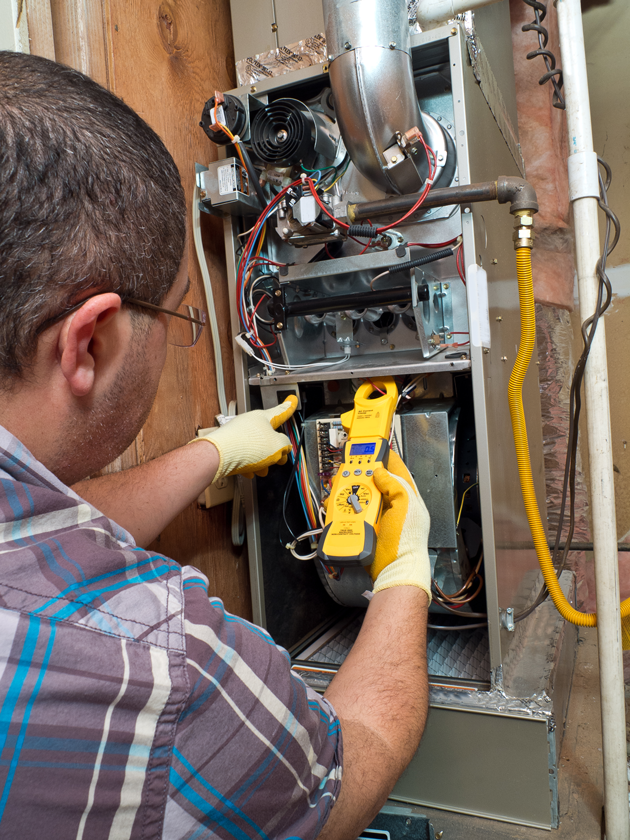
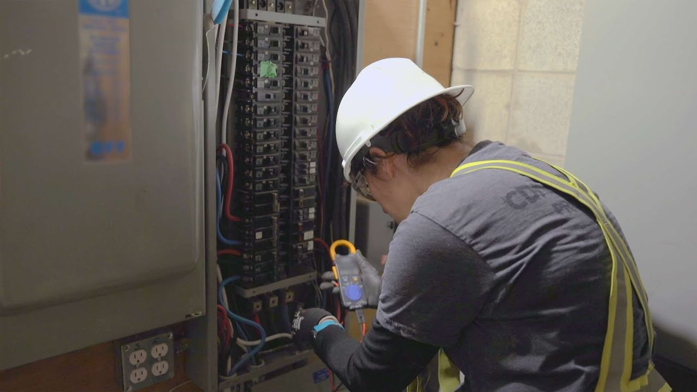

What Are Electrical Services?
Electrical services involve installing, repairing, and maintaining wiring, outlets, lighting, and power systems in your home or business. Licensed electricians ensure your property has safe, efficient, and reliable power.
Why Are Electrical Services Important?
- Ensures safety by preventing electrical hazards
- Improves energy efficiency with modern upgrades
- Keeps systems compliant with electrical codes
- Provides reliable power for daily living
- Supports future expansions and renovations
Steps in an Electrical Project
- Assessment: Inspect wiring, panels, and power needs.
- Planning: Design solutions for repairs or new installations.
- Installation/Repair: Upgrade wiring, outlets, lighting, or panels.
- Testing: Check circuits and connections for safety.
- Final Inspection: Ensure compliance with local codes.
Signs You May Need Electrical Services
- Frequent breaker trips or blown fuses
- Flickering or dimming lights
- Burning smells or sparks from outlets
- Outdated wiring or panels
- Need for new outlets, lighting, or upgrades
Note: Professional electrical services keep your home safe, efficient, and ready for modern living needs.


Back to Services